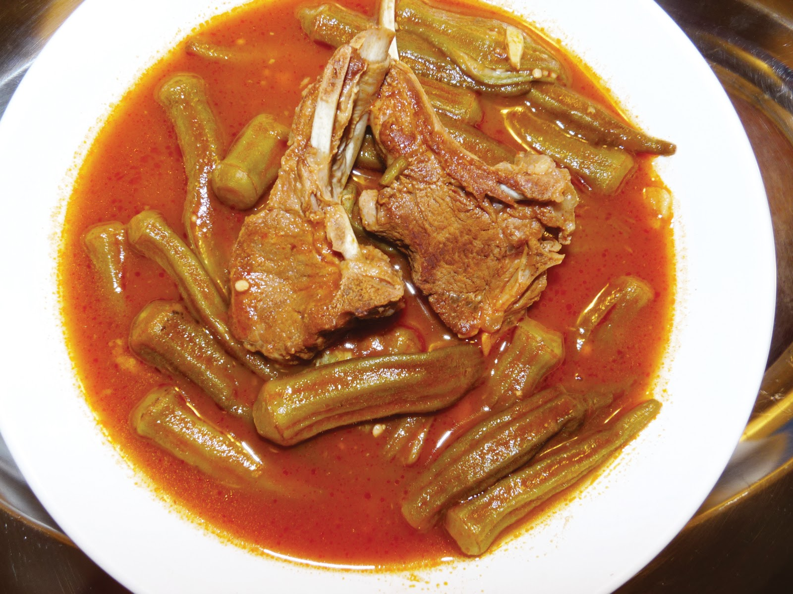

Be the first to rate & review! | 1 Photo
For this teriyaki salmon bowl, salmon is baked for 15 minutes with a 4-ingredient homemade teriyaki sauce using soy sauce, brown sugar, garlic, and ginger, then served in a bowl with rice, red cabbage, carrots, and radishes.
By Marwan Alkassir
This dish is a tomato based stew made using okra and lamb, but can also be made vegetarian. Best served with rice; this dish will sooth any soul and fill any stomach!
Step 1
Cook lamb ahead of time and set aside.
Step 2
In a large pot, heat oil over medium heat.
Step 3
Add chopped garlic and simmer for a few minutes until aromatic.
Step 4
Add tomato paste and stir. Simmer until dark red.